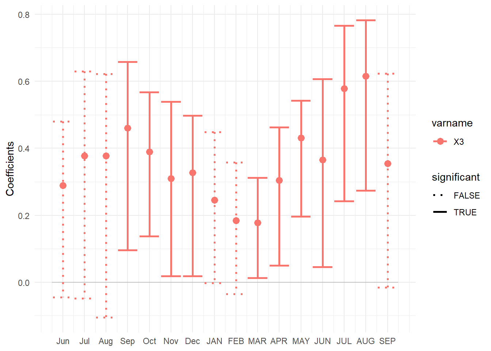
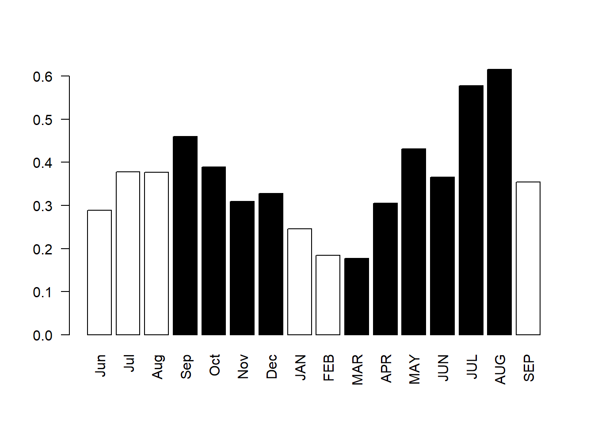
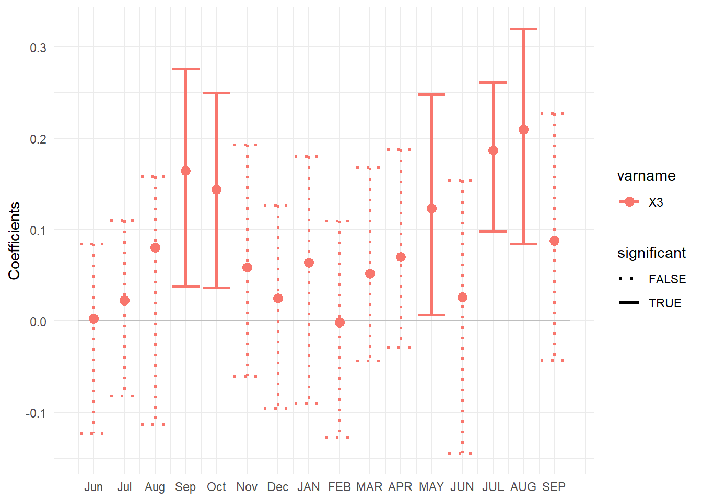
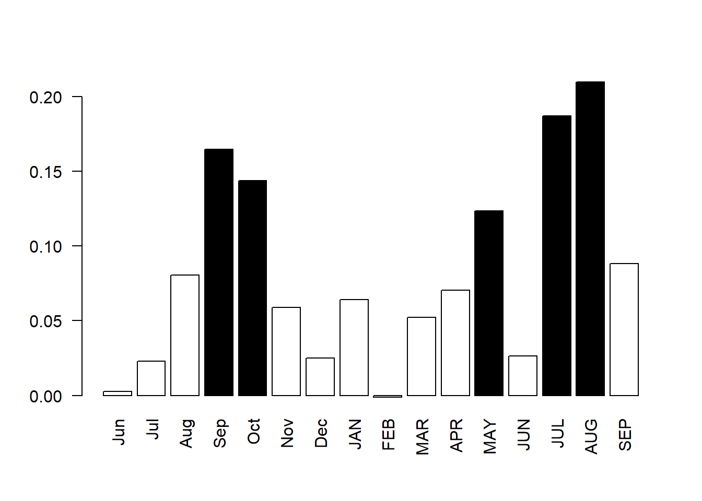
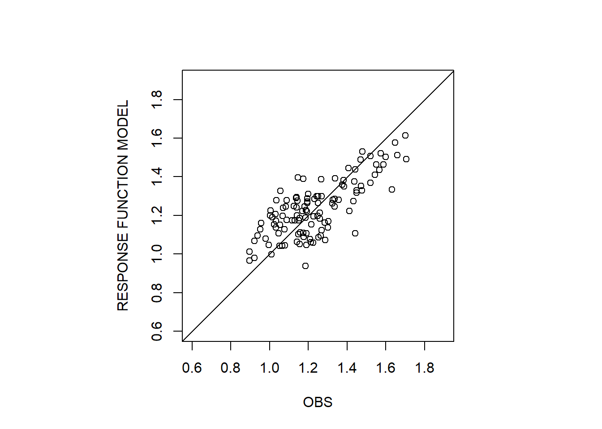
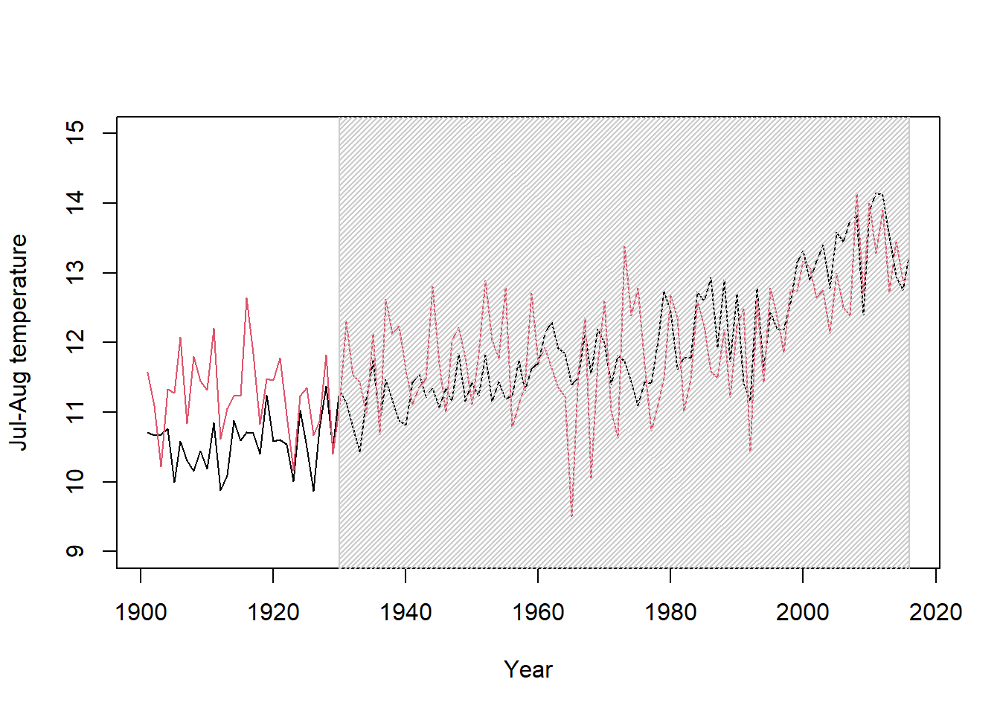

During this exercise, we will recover climate data and we will practice with response and transfer functions in R.
We will download climate data from Climate Explorer
We will use the R package treeclim.
(1a). Go to Climate Explorer
Weblink: https://climexp.knmi.nl/start.cgi
(1b). Select Monthly Observations
(1c). Select CRU TS4.04 Mean Temperature : Land / 1901-2019: CRU TS 4.04 (land)
(1d). Select the study region : ave_region:: lon= -73.000 -69.000, lat= 54.000 55.000
(1e). Dowload raw data
We will start loading the required packages and the data, including the climate data we just extracted and a black spruce ring width chronology in the taiga of Quebec. We will use this chronology for our exercise. We also assure to have perfect consistency for the years of these training datasets.
The ring width chronology can be found here: Pivot.SC.crn.csv
library(treeclim)
# Temperature data
Cl=read.delim("../data/icru4_tmp_-73--69E_54-55N_n.dat",
skip = 24,header=F,
sep="")
names(Cl)=c("Year","jan","feb","mar","apr","may","jun","jul","aug","sep","oct","nov","dec")
row.names(Cl)=Cl$Year
str(Cl)## 'data.frame': 119 obs. of 13 variables:
## $ Year: int 1901 1902 1903 1904 1905 1906 1907 1908 1909 1910 ...
## $ jan : num -24 -23.7 -23.3 -25.5 -26 ...
## $ feb : num -22.9 -20.9 -22.2 -25.3 -24.1 ...
## $ mar : num -18.1 -13.9 -15.3 -17.4 -17.3 ...
## $ apr : num -6.27 -6.92 -8.07 -8.2 -7.54 ...
## $ may : num 1.677 -0.255 0.795 1.964 0.457 ...
## $ jun : num 8.61 6.56 7.91 8.28 7.59 ...
## $ jul : num 12.1 11.7 11.1 12.3 12.3 ...
## $ aug : num 11.08 10.48 9.31 10.38 10.22 ...
## $ sep : num 5.96 6.45 6.07 4.37 5.58 ...
## $ oct : num -1.187 -1.75 -0.768 -1.406 -1.243 ...
## $ nov : num -9.47 -8.16 -9.08 -9.51 -9.66 ...
## $ dec : num -19.2 -21 -21.7 -21.8 -18.8 ...# TR data
Pivot.SC.crn=read.csv("../data/Pivot.SC.crn.csv",row.names = 1)
str(Pivot.SC.crn)## 'data.frame': 116 obs. of 2 variables:
## $ Pivot.SC.crn: num 1.055 1.047 1.05 1.066 0.921 ...
## $ samp.depth : int 163 162 159 159 159 159 161 162 161 163 ...# Assure year consistency
Pivot.SC.crn=Pivot.SC.crn[row.names(Pivot.SC.crn) %in% Cl$Year,]
Cl=Cl[Cl$Year %in% row.names(Pivot.SC.crn),](2a). Use the function dcc of treeclim to perform, first, climate-growth correlation analysis (method = “correlation”), second, climate-growth response function analysis (method = “response”). The results can be visualized with the functions summary, plot and barplot. Comment the results and figures.

(2b). Use the function dlm of treeclim to verify the adjustment of the response function obtained in step 2a. In step 2a, we see that the retained months of the response function analysis are previous September, previous October, and current May, July and August. We can thus set selection=c(-9,-10,5,7,8) as an argument of the function. A summary is obtained with the function summary. What is the variance explained by the model?
## Running for timespan 1902 - 2016...##
## Call:
## lm(formula = tree ~ ., data = design_df)
##
## Residuals:
## Min 1Q Median 3Q Max
## -0.27216 -0.09442 -0.00040 0.08847 0.33355
##
## Coefficients:
## Estimate Std. Error t value Pr(>|t|)
## (Intercept) -0.188490 0.207793 -0.907 0.36635
## X3.prev.sep 0.037857 0.014083 2.688 0.00831 **
## X3.prev.oct 0.028073 0.010545 2.662 0.00894 **
## X3.curr.may 0.026061 0.009958 2.617 0.01013 *
## X3.curr.jul 0.037569 0.019460 1.931 0.05614 .
## X3.curr.aug 0.064056 0.015297 4.188 5.74e-05 ***
## ---
## Signif. codes: 0 '***' 0.001 '**' 0.01 '*' 0.05 '.' 0.1 ' ' 1
##
## Residual standard error: 0.1292 on 109 degrees of freedom
## Multiple R-squared: 0.567, Adjusted R-squared: 0.5471
## F-statistic: 28.54 on 5 and 109 DF, p-value: < 2.2e-16(2c). Produce a scatterplot of observed tree-ring data (YOUR_RESPONSE_LIST$truncated$tree) versus predicted tree ring data by the response function model (predict(YOUR_RESPONSE_MODEL)). Comment on the plot.

While a response function finds the optimal combination of climate variables to model tree-ring data, a transfer function predict a climate variable from tree ring data and may be used for a climate reconstruction. In this exercise we want to predict July-August mean temperature values from our tree ring data.
jul_aug=(Cl$jul+Cl$aug)/2
MyYear=Cl$YearA dendroclimatic reconstruction has always a training calibration period that it is used to define the transfer function. The transfer function is then applied over all years with tree-ring data to reconstruct the climate (even when no meteorological instrumental data are available). Let’s set a calibration period.
Calibration=1930:2016The linear scaling is the simplest transfer function method that transform tree-ring data to have same mean and SD of the climate data over the calibration period with the following formula:
\(REC_{i} = (TR_{i} - MeanTR_{cal}) * (SDClim_{cal}/SDTR_{cal}) + MeanClim_{cal}\)
(3a). Recunstruct the 1901-2016 July-August mean temperature values based on the selected calibration period and on the linear scaling formula. Then, plot the results as shown here below (the black line is the tree-ring based reconstruction and the hatched area is the calibration period).

(3b) Compute the following statistics that may be used to assess the quality of a reconstruction:
Correlation between the climate and the reconstruction over the full, the calibration and the verification period
The reduction of error
\(RE = 1 - \frac{\sum_{i = 1}^{n_{ver}}{(Clim_i-Rec_i)^2}}{\sum_{i = 1}^{n_{ver}}{(Clim_i-\bar{Clim_{cal}})^2}}\)
The coefficient of efficiency
\(CE = 1 - \frac{\sum_{i = 1}^{n_{ver}}{(Clim_i-Rec_i)^2}}{\sum_{i = 1}^{n_{ver}}{(Clim_i-\bar{Clim_{ver}})^2}}\)
## [1] "r full period = 0.6659785729123"## [1] "r calibration period = 0.619124385970409"## [1] "r verification period = 0.427930981691686"## [1] "RE = 0.0771152545556467"## [1] "CE = -1.52822739343748"